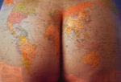

Tierra Media
 De: La Frikipedia, la enciclopedia extremadamente seria.
De: La Frikipedia, la enciclopedia extremadamente seria.
| De la serie Países del planeta tierra:
|
| A House In the Middle of the Street
|
|
| Lema: No puedes pasar
|
Himno: Camino Moria
|

Como puede usté observar, la Sombra del Ojo Oscuro se extiende...
|
| Capital
|
Minas Riotinto
|
| Mayor ciudad
|
Argamasilla de Arda
|
| Lenguas oficiales
|
Sindarin, Oestron (el inglés de la Tierra Media), Altoaragonés, Lengua Negra, Lengua de Serpiente, Quenya, Tanzania y Somalia.
|
| Gobierno
|
Despotismo ocular
|
| Señor Oscuro
|
Sauron
|
| Área
|
Tól planeta salvo las Tierras Imperecederas de los Valar, que son una República Independiente
|
| Población
|
Cada vez menos gracias a la política de control demográfico del presi, basada en majarlos a palos
|
| Moneda
|
Lero de mithril
|
| Zona horaria
|
No usan reloj
|
| Dominio Internet
|
Aún no, pero también la Sombra dominará Internet un día
|
| Código telefónico
|
Tampoco usan de eso
|
|
|
Universo fantástico, fabuloso, maravilloso y fenomenal cuyo nivel tecnológico se halla estancado en la Edad Media, de ahí su nombre.
Creación
La Tierra Media fue creada por el Hacedor, Eru, quien la pobló con toda una serie de razas inteligentes. Primero creó a los hombres (y las mujeres), y después tomó a varios de ellos y los estiró, manipuló, desfiguró, se los metió en la boca, los masticó e hizo globos con ellos, hasta transformarlos en el resto de criaturas:
- Hombre dejado tal cual: Hombre.
- Hombre encogido: Hobbit.
- Hombre estirado, adelgazado y cambiado de sexo: Elfo.
- Hombre estirado, adelgazado, cambiado de sexo y con sabor a menta: Elfo de los bosques.
- Hombre encogido y ensanchado: Enano.
- Hombre estirado y ensanchado: los Valar.
- Hombre estirado, ensanchado y dejado en la basura hasta apestar por completo: Troll.
- Hombre encogido, ensanchado y dejado en la basura hasta apestar por completo: Orco.
- Hombre encogido, adelgazado y dejado en la basura hasta apestar por completo: Góllum.
Como véis, todo se basó en un sencillo sistema de medidas.
Historia
Puede resumirse en:
- Hostias
- Aún más hostias
- Un dios renegado al que le gusta la Oscuridad y que va por ahí rompiendo lámparas, apagando velas y desenchufando fluorescentes.
- Un pueblo de duendecillos inconscientes y bucólicos que viven completamente entregados a la danza, la pirotecnia, la bebida y el fumeteo de canutos, mientras a dos quilómetros de su villa se está librando una batalla épica y produciendo un genocidio espantoso.
- Una compañía multirracial y mestiza de actores ambulantes que recorren toda la Tierra Media junto a una mascota llamada Góllum.
- Más hostias aún, en las que casualmente se suelen ver implicados los susodichos feriantes.
- Los hechos que se narran en la trilogía acontecen durante la Tercera Edad, lo que explica por qué salen tantos agüelos con barba blanca y bastón.
- Una mina completamente abandonada (Moria) y muchas otras minas (Minas Tirith, Minas Anor...) en las que vive mucha gente.
- Uno de los feriantes que se enfrenta al demonio de la mina abandonada (es decir, más hostias todavía) y la galería se viene abajo porque el demonio prende fuego a una concentración de grisú.
- Una comunidad de metrosexuales oculta en el corazón de un bosque.
- Un hobbit que encuentra un anillo y se convierte en un Profundo comepescado.
- Una fortaleza de proporciones inmensas y con un ojo en todo lo alto, como los cíclopes.
- Un tío chungo que vive en esa fortaleza y que sueña con convertir a la Tierra Media en la Tierra Mierda.
- Un hobbit bajito y debilucho que se enfrenta a un troll gigante.
- Un hobbit bajito y debilucho que se enfrenta a una araña gigante.
- Un hobbit bajito y debilucho que se enfrenta a un montaraz alto y fuerte que le quiere birlar el anillo.
- Un hobbit bajito y debilucho que se enfrenta a un encapuchado negro sin rostro que se la clava y le transmite una enfermedad de transmisión sexual.
- Un hobbit bajito y debilucho que está hasta los cojones de enfrentarse a enemigos mucho más poderosos que él.
- Más hostias.
La Tierra Media y la lucha contra el insomnio
Los acontecimientos de la Tierra Media se narran en una serie de libros que recomiendan 9 de cada 10 dormidólogos para luchar contra el insomnio, conocidos como El Señor de los Piercings.
Dado que tres libros de chorrocuatrocientasmil páginas no eran suficientes para conciliar el sueño, el autor de los mismos (un tal Juan Ronaldo Rodríguez Tolkien) se vio obligado a editar otros tomos, como El Silmarillion o el Hobbit. Este último narra las aventuras del tío del hobbit bajito y debilucho, Bilbo Bolsón, cuyo nombre significa "un bilbaíno con un saco".
Ver también
Tolkien
El Señor de los Anillos
Rol
Las tres pelis seguidas, a ver si te atreves
Autor(es):
- Doctor grijander
- Aque
- Darkvid
- Roms
- Diegocon13
- Pachecoxvi
- Condemol
- Mel-o
- Sócrates HoJu
- Fictions marilyn
Frikipedia 2005-2016, Licencia
GFDL 1.2 - Extraído por FrikiLeaks